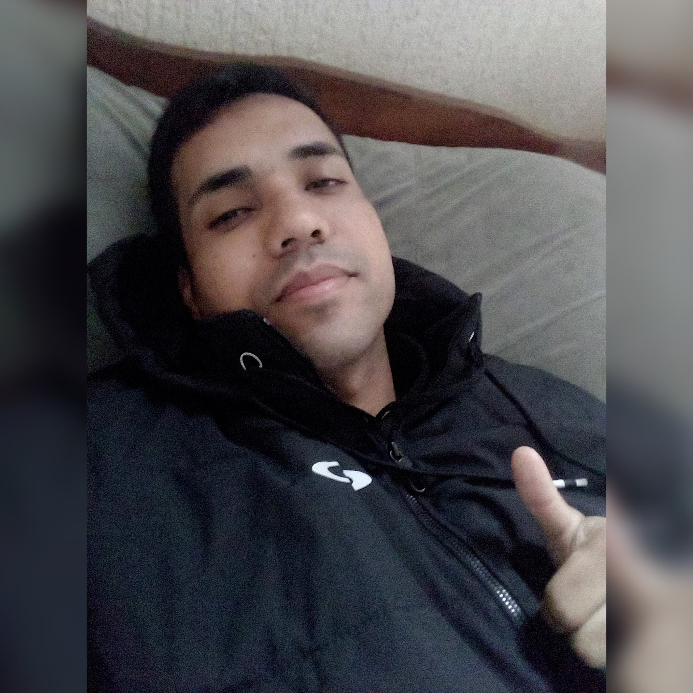
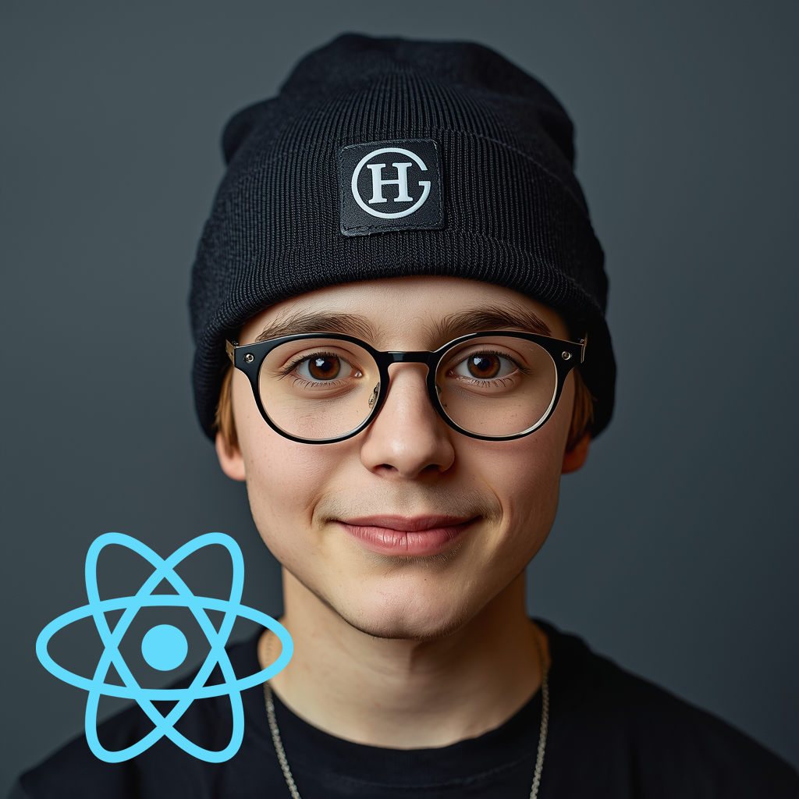
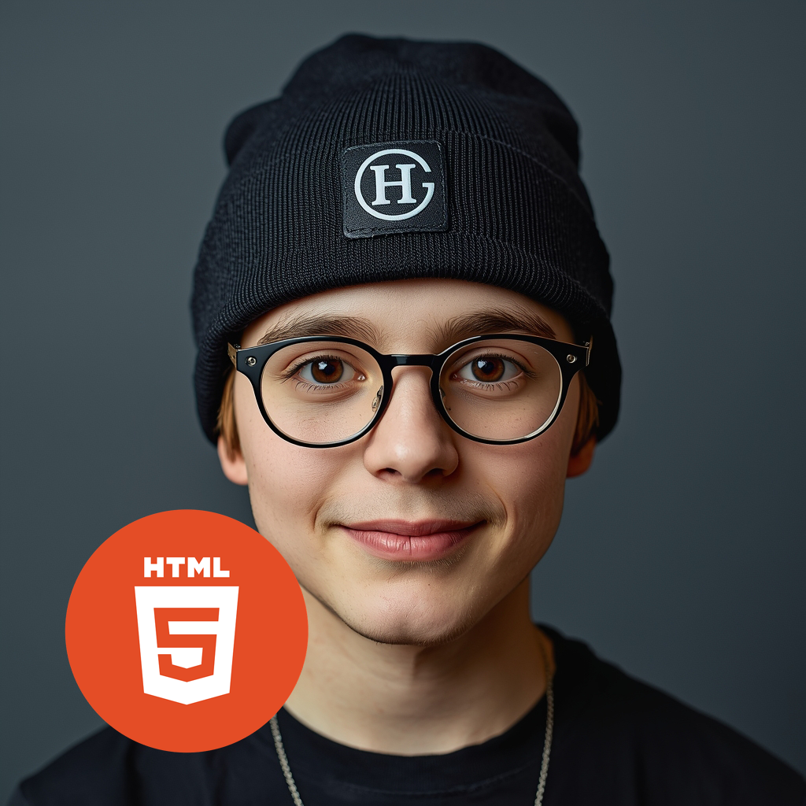
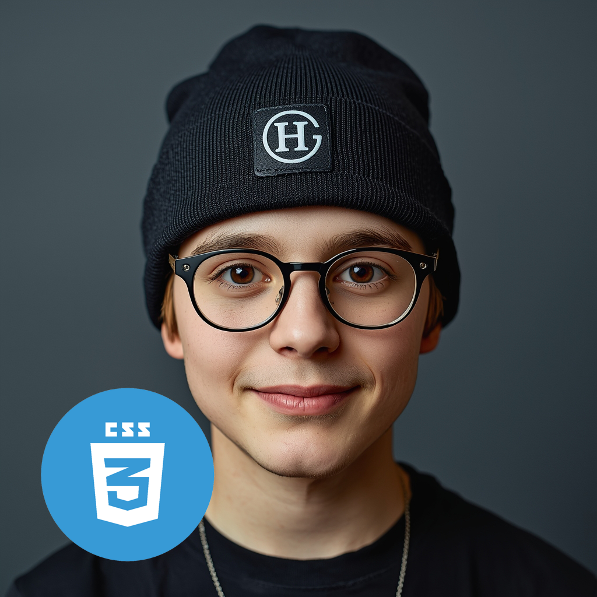
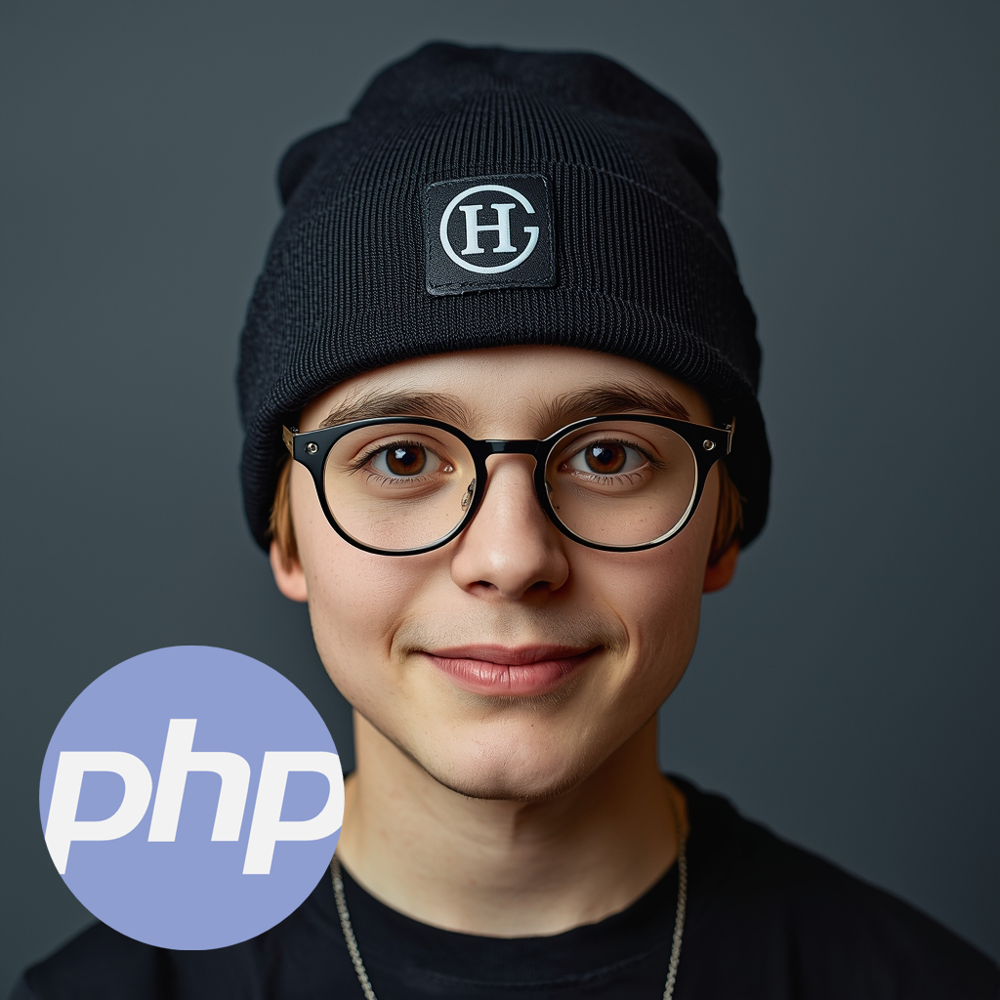
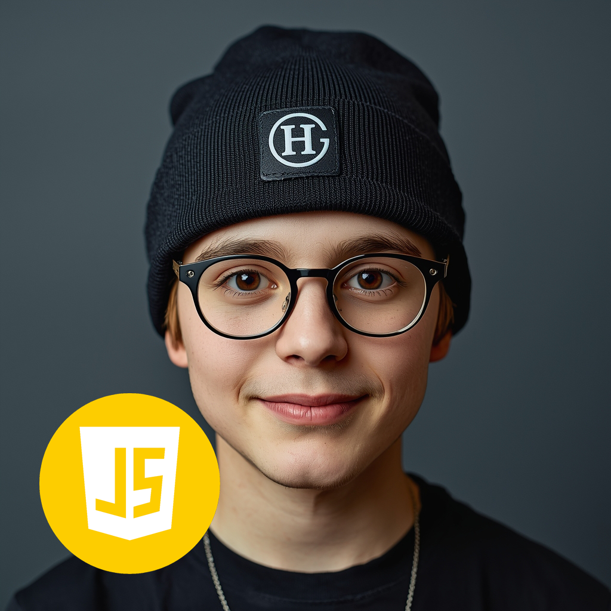
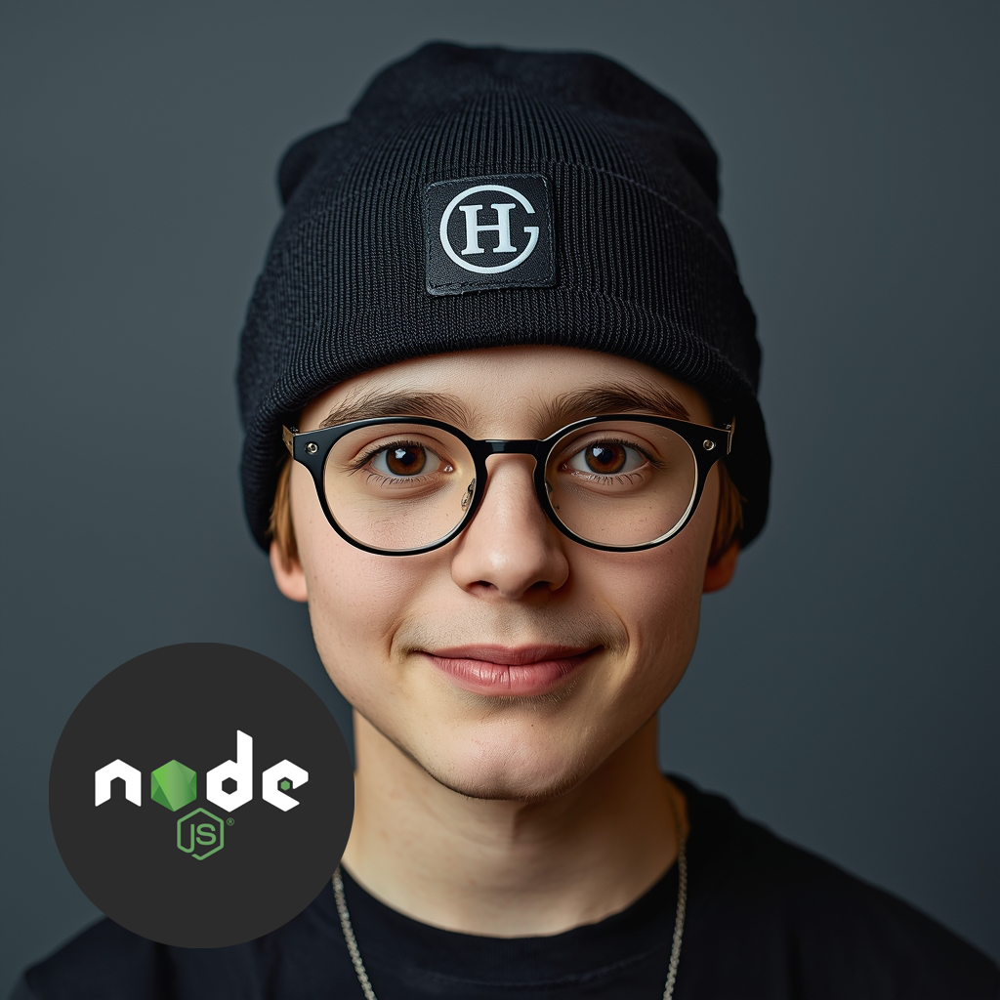
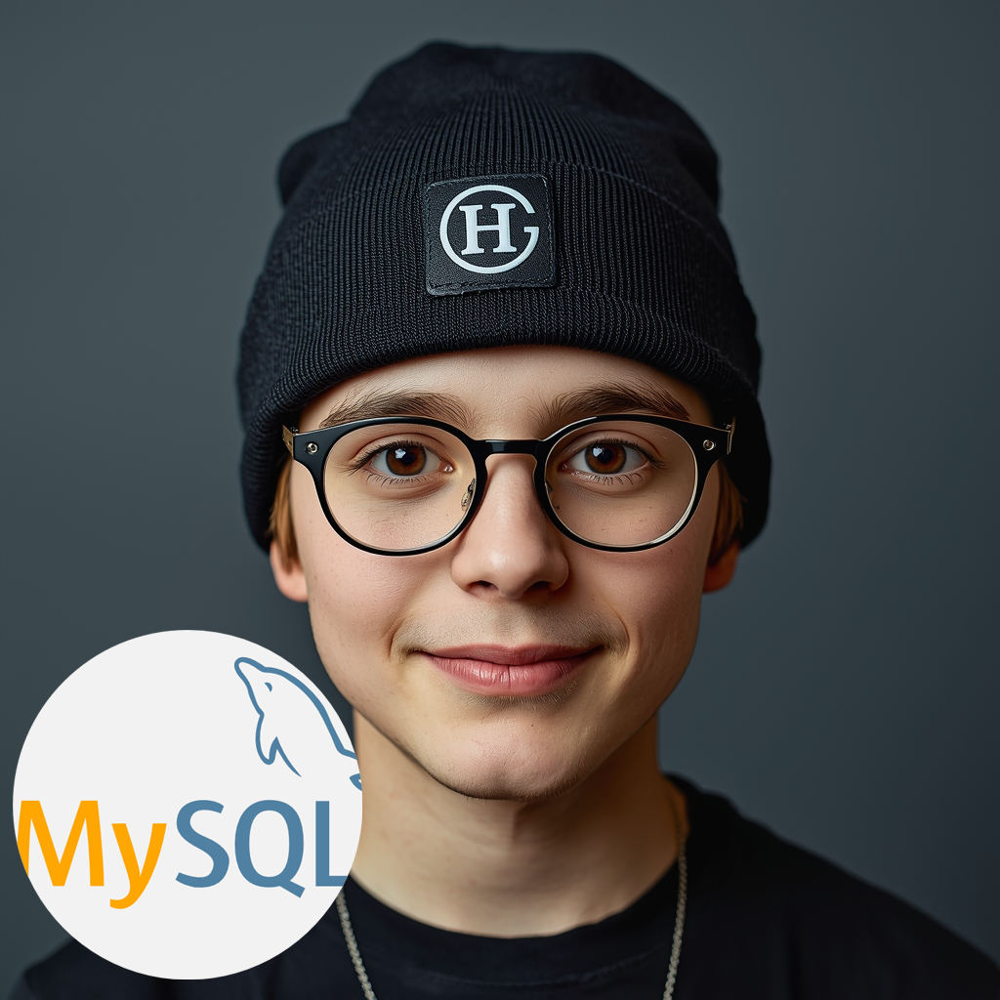
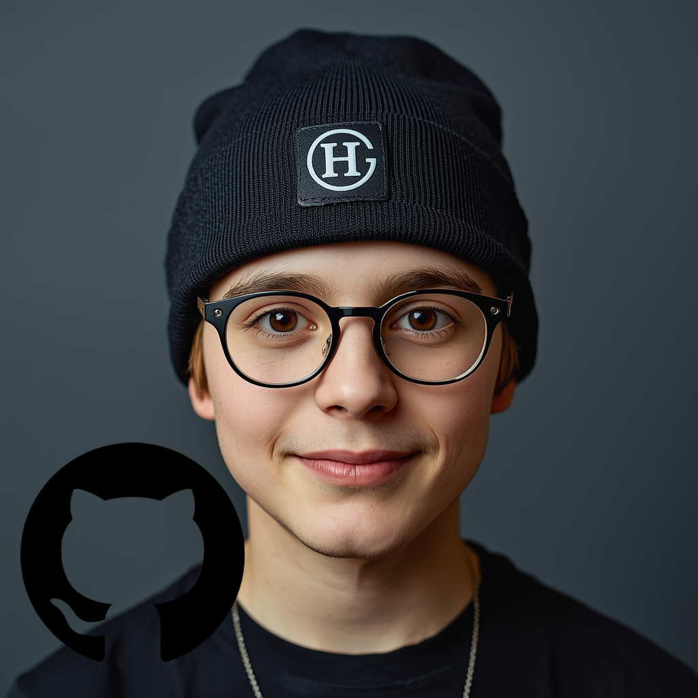

Meus conhecimentos










Confira meu portfólio completo: https://felipejesusbrasilio.github.io/portfolio/ Sobre Mim Meu nome é Felipe de Jesus, tenho 28 anos e sou formado em Gestão da Tecnologia da Informação. Sempre fui movido pela curiosidade e pelo desejo constante de aprender, especialmente quando se trata de tecnologia e inovação. No meu tempo livre, gosto de assistir cursos e tutoriais de programação, buscando aprimorar minhas habilidades e expandir meus conhecimentos na área de desenvolvimento de software. Tenho grande interesse em iniciar minha trajetória profissional como Desenvolvedor Front-End Júnior ou Desenvolvedor Back-End Júnior, pois me identifico tanto com a criação de interfaces intuitivas e funcionais quanto com a construção da lógica e estrutura por trás das aplicações. Sou uma pessoa dedicada, focada e comprometida com meu crescimento profissional. Acredito que a tecnologia tem o poder de transformar realidades, e quero fazer parte desse processo, contribuindo com soluções eficientes e inovadoras. Além da tecnologia, também valorizo o cuidado com a saúde e o bem-estar. Gosto de frequentar a academia, pois acredito que disciplina e constância são fundamentais tanto na vida pessoal quanto na profissional. Estou em constante evolução, buscando oportunidades que me permitam colocar em prática meus conhecimentos, aprender com profissionais experientes e crescer como desenvolvedor.